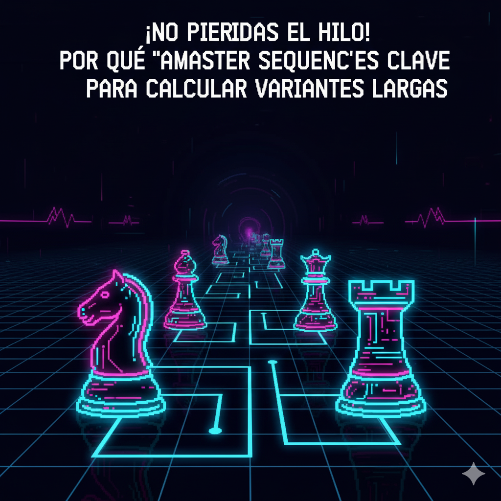

El juego de "Simón Dice" que entrena tu cerebro para no olvidar jugadas clave.
¿Te ha pasado esto? Empiezas a calcular una variante: "...si como el peón, él recaptura, yo muevo el caballo, él mueve la torre... eh... espera, ¿dónde estaba mi caballo?" Te pierdes en tu propia línea de pensamiento. Este es uno de los problemas más difíciles del ajedrez: la **memoria secuencial**.
El cálculo no es solo *ver* las jugadas, es *recordar* el orden en que ocurren. Master Sequence, nuestro juego de "Simón Dice" en el tablero de ajedrez, está diseñado específicamente para fortalecer este músculo mental. Al obligarte a recordar y reproducir secuencias de casillas cada vez más largas, estás entrenando la habilidad exacta que necesitas para no "perder el hilo" en una partida real.
Piensa en tu cerebro como una computadora. Tu "memoria de trabajo" es la memoria RAM: es el espacio mental que usas para mantener la información con la que estás trabajando *ahora mismo*. Cuando calculas "A-B-C-D", estás usando esa RAM. 'Master Sequence' es un ejercicio de estrés para esta RAM. Al forzarte a recordar 8, 9, 10+ movimientos en orden, estás aumentando la capacidad de tu memoria de trabajo, permitiéndote calcular variantes más largas y profundas sin sobrecargarte.
El cálculo real no es una línea recta. Es un "árbol". Calculas A-B-C, luego vuelves a B y pruebas una alternativa, A-B-D. 'Master Sequence' simula esto perfectamente. Cada ronda, debes recordar la secuencia *anterior* (A-B-C) y añadirle un nuevo movimiento (D). Este constante "recordar y añadir" es idéntico al proceso de explorar un árbol de variantes, fortaleciendo tu capacidad de navegar por él sin confundirte.
Es imposible que un jugador de ajedrez recuerde 20 movimientos aleatorios. Es *fácil* recordar una "Apertura Siciliana". La diferencia es el "chunking" o agrupación. Tu cerebro deja de ver movimientos individuales y empieza a ver *ideas* o *patrones*. 'Master Sequence' te obliga a hacer esto. Cuando la secuencia llega a 7 u 8 movimientos, es casi imposible recordarla como "g1, f3, e5...". En cambio, tu cerebro empezará a ver un *patrón*: "Ah, es la ruta de un caballo". Estás aprendiendo a agrupar información, el secreto para una memoria de maestro.
Un solo momento de distracción en una partida, o en 'Master Sequence', y pierdes. Este juego es un entrenamiento de *enfoque*. Requiere una concentración total y sostenida para seguir la secuencia, almacenarla en la memoria y reproducirla sin errores. Es un ejercicio de "mindfulness" para ajedrecistas. Entrenar esto en un entorno de arcade divertido hace que sea mucho más fácil mantener ese mismo nivel de enfoque férreo durante una partida de torneo de 3 horas.
Muchas secuencias en 'Master Sequence' no son aleatorias; a menudo siguen patrones lógicos en el tablero (diagonales, movimientos de piezas, etc.). Al repetir estos patrones una y otra vez, desarrollas una "memoria muscular" para las rutas que toman las piezas. Esto se traduce en una intuición más rápida. Verás una secuencia táctica en una partida y tu cerebro dirá: "¡Oye, he visto este patrón antes!", dándote una ventaja de velocidad decisiva sobre tu oponente.
La habilidad de seguir secuencias largas sin perderse es lo que te permite encontrar esas brillantes combinaciones ganadoras. ¡Deja de olvidar tus propias líneas y empieza a dominar el cálculo!